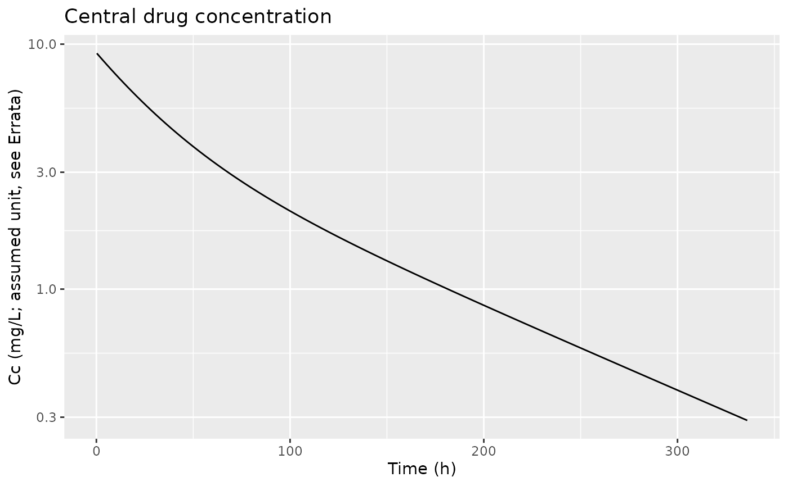
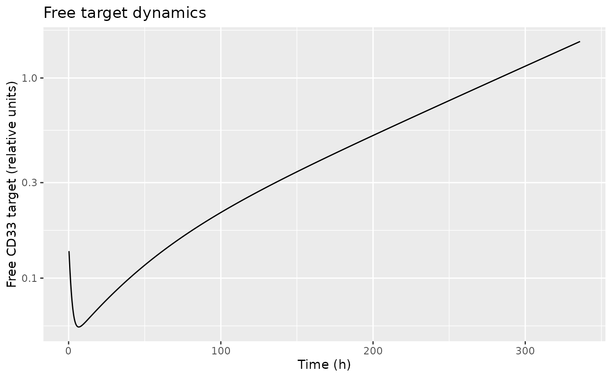
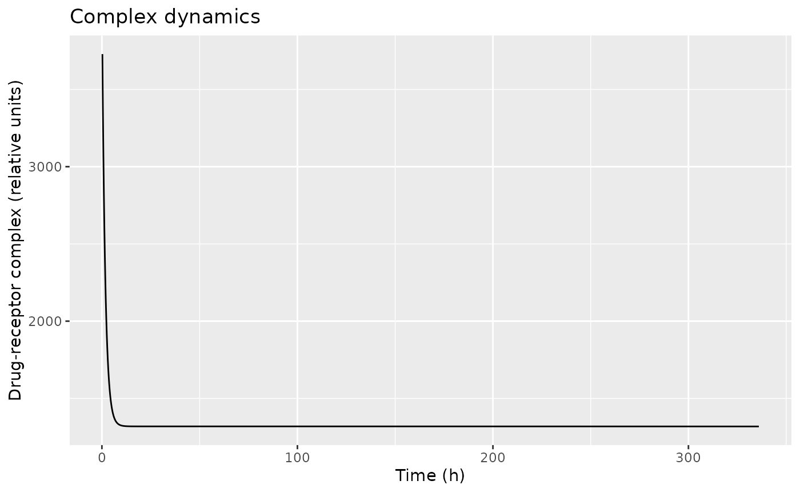
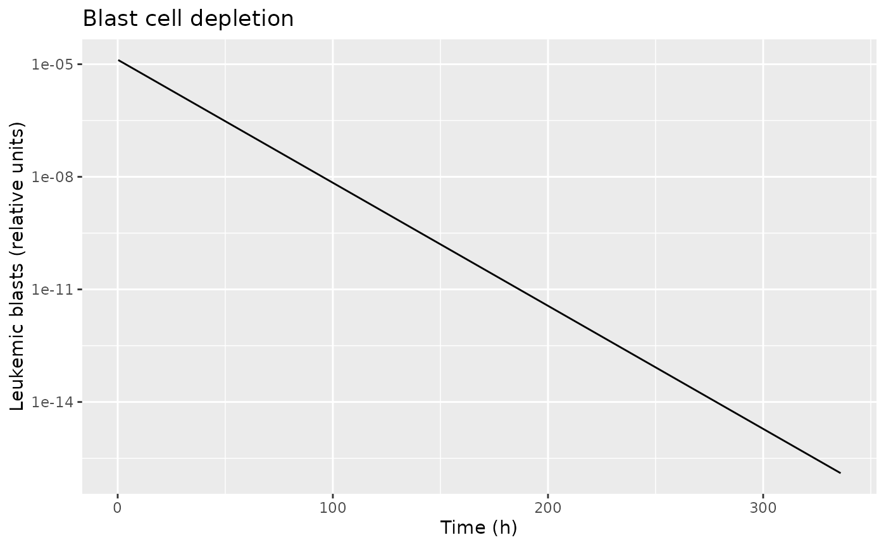

Jager_2011_gemtuzumab
Source:vignettes/articles/Jager_2011_gemtuzumab.Rmd
Jager_2011_gemtuzumab.RmdModel and source
- Citation: Jager E, van der Velden VHJ, te Marvelde JG, Walter RB, Agur Z, Vainstein V (2011). Targeted drug delivery by gemtuzumab ozogamicin: mechanism-based mathematical model for treatment strategy improvement and therapy individualization. PLoS One 6(9):e24265. doi:10.1371/journal.pone.0024265.
- DDMORE Foundation Model Repository entry: DDMODEL00000229 – Monolix re-fit with an added peripheral drug compartment.
- Description: Mechanism-based PKPD model coupling drug pharmacokinetics with explicit binding to the cell-surface antigen CD33. Free drug in a central compartment binds free CD33 receptor to form a drug-receptor complex that is internalized; the toxic ozogamicin component then drives linear depletion of leukemic blast cells.
The model packaged here translates the DDMORE bundle’s
GO_PK_model.mdl (MDL DSL source) to the nlmixr2lib
inst/modeldb/ddmore/ convention. Parameter values come from
the bundle’s MDL parObj$STRUCTURAL and
parObj$VARIABILITY blocks, which
Model_Accommodations.txt documents as the Monolix-fitted
final estimates obtained by re-fitting the Jager 2011 mechanism on the
original publication data with an additional peripheral PK compartment
and simultaneous (rather than step-wise) estimation of all parameters.
The DDMORE bundle does not ship a .lst
listing or a simulated dataset, and the original Jager 2011 PLoS One
paper is not on disk under this worktree’s literature tree, so the
implementation is faithful to the MDL but has no external numeric
cross-check; see Assumptions and deviations below.
Population
The Jager 2011 publication describes a single-cohort mechanism-based
PKPD analysis in patients with acute myeloid leukemia (AML) receiving
the CD33-directed antibody-drug conjugate gemtuzumab ozogamicin
(Mylotarg). The DDMORE bundle does not reproduce demographic detail
(age, weight, sex, race distribution, regional balance, or trial design)
in either the Model_Accommodations.txt accompaniment or the
MDL dataObj block. Programmatic access:
mod_fun <- readModelDb("Jager_2011_gemtuzumab")
str(environment(mod_fun)$population)
#> NULLConsult Jager et al. (2011) directly for the full population description.
Source trace
The per-parameter origin is recorded as an in-file comment next to
each ini() entry in
inst/modeldb/ddmore/Jager_2011_gemtuzumab.R. The table
below collects those entries in one place. All values come from the MDL
bundle’s parObj block in GO_PK_model.mdl; the
bundle ships no Output_real_*.lst listing.
| nlmixr2 parameter | Value | DDMORE source location |
|---|---|---|
lvc |
log(5.42) | parObj$STRUCTURAL$POP_v1 |
lk |
log(0.0135) | parObj$STRUCTURAL$POP_k |
lkm |
log(0.00757) | parObj$STRUCTURAL$POP_km |
lkn |
log(0.0185) | parObj$STRUCTURAL$POP_kn |
lkb |
log(9.24e5) | parObj$STRUCTURAL$POP_kb |
lku |
log(310) | parObj$STRUCTURAL$POP_ku |
lki |
log(0.624) | parObj$STRUCTURAL$POP_ki |
lke |
log(0.199) | parObj$STRUCTURAL$POP_ke |
lrp |
log(823) | parObj$STRUCTURAL$POP_rp |
lalph |
log(0.0755) | parObj$STRUCTURAL$POP_alph |
ln0 |
log(1.32e-5) | parObj$STRUCTURAL$POP_n0 |
etalki |
0.258^2 |
parObj$VARIABILITY$omega_ki (sd, type is sd) |
etalke |
0.281^2 |
parObj$VARIABILITY$omega_ke (sd, type is sd) |
etalrp |
0.611^2 |
parObj$VARIABILITY$omega_rp (sd, type is sd) |
addSd |
0.000583 |
parObj$STRUCTURAL$a (additive residual error) |
Constant nav
|
6.02214 |
mdlObj$MODEL_PREDICTION inline (Avogadro number /
1e23) |
Constant vblood
|
4.8 |
mdlObj$MODEL_PREDICTION inline (assumed blood volume,
L) |
ODE central
|
n/a |
mdlObj$MODEL_PREDICTION$DEQ A1
|
ODE target
|
n/a |
mdlObj$MODEL_PREDICTION$DEQ A2 (init = rp
/ ke) |
ODE complex
|
n/a |
mdlObj$MODEL_PREDICTION$DEQ A3 (init =
0) |
ODE cells
|
n/a |
mdlObj$MODEL_PREDICTION$DEQ A4 (init =
n0) |
ODE peripheral1
|
n/a |
mdlObj$MODEL_PREDICTION$DEQ A5 (init =
0) |
Output Cc
|
n/a | mdlObj$MODEL_PREDICTION$output1 = A1 / v1 |
Virtual cohort
The DDMORE bundle for DDMODEL00000229 ships no event dataset and the Jager 2011 paper is not on disk, so no published clinical regimen is available to reproduce. The vignette exercises the packaged ODEs on a single typical-individual scenario (one 50 mg IV bolus into the central compartment) so that the simulated trajectories can be inspected for mechanistic plausibility – not as a clinically-grounded dosing regimen.
Simulation
mod <- rxode2::rxode2(readModelDb("Jager_2011_gemtuzumab"))
#> ℹ parameter labels from comments will be replaced by 'label()'
mod_typ <- rxode2::zeroRe(mod)
sim <- rxode2::rxSolve(mod_typ, events = events)
#> ℹ omega/sigma items treated as zero: 'etalki', 'etalke', 'etalrp'Mechanistic sanity checks
The DDMORE bundle does not link to a .lst listing or a
published NCA / VPC figure that this packaged model can be compared
against numerically, and the structural model has no NCA-amenable PK arm
in the ordinary sense (drug elimination is split across linear
elimination, target-mediated internalization, and a peripheral PK
compartment with two rate constants that are not in CL/Q form).
Validation therefore consists of mechanistic sanity checks: each ODE has
the qualitative behavior its mechanism implies.
Drug central concentration declines monotonically after the bolus
ggplot(sim, aes(time, Cc)) +
geom_line() +
scale_y_log10() +
labs(x = "Time (h)", y = "Cc (mg/L; assumed unit, see Errata)",
title = "Central drug concentration")
Free CD33 receptor depletes upon drug arrival, then recovers as drug clears
The receptor is at steady state rp / ke ~= 4135 at
t = 0, but the incoming dose drives a fast binding pulse
that depletes free target by several orders of magnitude before
target slowly recovers as drug – and complex – fall.
ggplot(sim, aes(time, target)) +
geom_line() +
scale_y_log10() +
labs(x = "Time (h)", y = "Free CD33 target (relative units)",
title = "Free target dynamics")
Drug-receptor complex peaks early and decays as drug clears
ggplot(sim, aes(time, complex)) +
geom_line() +
labs(x = "Time (h)", y = "Drug-receptor complex (relative units)",
title = "Complex dynamics")
Leukemic blast cells decline at the typical-population rate
alph
The cell ODE is d/dt(cells) = -alph * cells, so cells
decay exponentially at typical-value rate alph = 0.0755 1/h
(half-life log(2) / alph ~= 9.18 h). The simulated
trajectory should match this analytically.
ggplot(sim, aes(time, cells)) +
geom_line() +
scale_y_log10() +
labs(x = "Time (h)", y = "Leukemic blasts (relative units)",
title = "Blast cell depletion")
Assumptions and deviations
The DDMORE Foundation Model Repository entry DDMODEL00000229 ships
only the MDL DSL source (GO_PK_model.mdl), its PharmML XML
rendering (GO_PK_model.xml), the
Model_Accommodations.txt reference note, and RDF / scraper
metadata – there is no Output_real_*.lst,
Output_simulated_*.lst, or simulated event dataset. The
Jager 2011 publication itself is not on disk in this worktree’s
literature tree. The following assumptions and deviations apply.
-
Parameter values come from the MDL
parObjblock, not a.lstlisting. The bundle has no NONMEM listing file with aMINIMIZATION SUCCESSFULblock whose final estimates can be read off, and the DDMORE-source skill’s default rule (read final estimates fromOutput_real_*.lst) cannot apply. The MDLparObj$STRUCTURALandparObj$VARIABILITYvalues are treated as the bundle’s authoritative final estimates perModel_Accommodations.txt, which describes the parObj as the Monolix re-fit of the Jager 2011 model on the publication’s data. -
Bundle is a Monolix re-fit, not a literal reproduction of
Jager 2011.
Model_Accommodations.txtdocuments two material differences from the publication:- The PK structure was extended from the published one-compartment
drug PK (linear elimination only) to a two-compartment drug PK with
linear elimination plus a peripheral compartment (rate constants
km,kn). - All parameters were estimated simultaneously in Monolix, in contrast
with Jager 2011’s step-wise estimation. As a result, the parObj values
for parameters that exist in both formulations (e.g.,
kb,ku,ki,ke,rp,k,alph,n0,v1) differ from the values reported in the original publication.
- The PK structure was extended from the published one-compartment
drug PK (linear elimination only) to a two-compartment drug PK with
linear elimination plus a peripheral compartment (rate constants
-
No external numeric cross-check. Without the
publication PDF on disk and without a
.lstlisting in the bundle, neither published parameter tables nor the bundle’s own re-fit objective function / per-subject predictions are available for verification. Source-trace comments point at the MDLparObjlines; reviewers wishing to verify against the original Monolix run should consult the live DDMORE repository entry athttps://repository.ddmore.eu/model/DDMODEL00000229. -
Units of dose, central concentration, additive error,
receptor, and cell counts are MDL-native. The MDL
dataObjblock declaresAMT : { use is amt, variable = A1 }andDV : { use is dv, variable = Y }with no explicit unit annotations. The packagedunitsfield declaresdosing = "mg"andconcentration = "mg/L"based on the observation that a 50-unit dose intocentralproduces an initialCc = amt / vc ~= 9.22, which is consistent with a clinical mg-scale gemtuzumab ozogamicin bolus (typical adult IV ~6-18 mg) and a central volumev1 = 5.42 L. Receptor units (target,complex,rp) and cell-count units (cells,n0) are MDL-native and are mechanism-specific scalings rather than physical receptor or cell numbers; the inline constantsnav = 6.02214(Avogadro / 1e23) andvblood = 4.8 Lin thecentralODE convert the per-cell binding flux into a plasma-equivalent rate. Reviewers concerned about the exact unit interpretation should consult Jager 2011 directly. -
OMEGA correlation block is dropped as vestigial.
The MDL parObj declares an
OMEGAblock withtype is corrover six etas (ETA_k,ETA_alph,ETA_n0,ETA_v1,ETA_kn,ETA_km), but every individualomega_Xfor those six parameters is0.0(type is sd). Mathematically, a correlation among zero-variance random effects has no effect on simulation; the packaged model omits the correlation block and applies IIV only toki,ke, andrp(the three etas whoseomega_XparObj sd is non-zero). -
Compartment name
cellsis non-canonical.nlmixr2lib::checkModelConventions()flagscellsas not in the canonical compartment list. The model’s biology is leukemic blast cell count, which has no canonical short name in the register;cellswas chosen by analogy with thecirc/precursor1..4naming used in the DDMORE bundle forFriberg_2002_paclitaxel. A GitHub issue should ratify a canonical name for cell-count compartments before this convention is reused for additional models. -
Population demographics absent. The
populationmetadata for this model usesNA_*placeholders for age range, weight range, sex ratio, region, and study count because the DDMORE bundle does not ship that detail and the publication itself is not on disk. Consult Jager 2011 for the population description. - No PKNCA validation. The structural model is not a standard PK model, lacks NCA-amenable single-arm PK output for which Cmax / AUC / half-life are clinically interpretable in isolation, and has no published reference NCA values or VPC figure available locally to compare against. Validation in this vignette is reduced to mechanistic sanity (each ODE behaves as its mechanism implies) and an analytical match for the leukemic-blast depletion ODE.